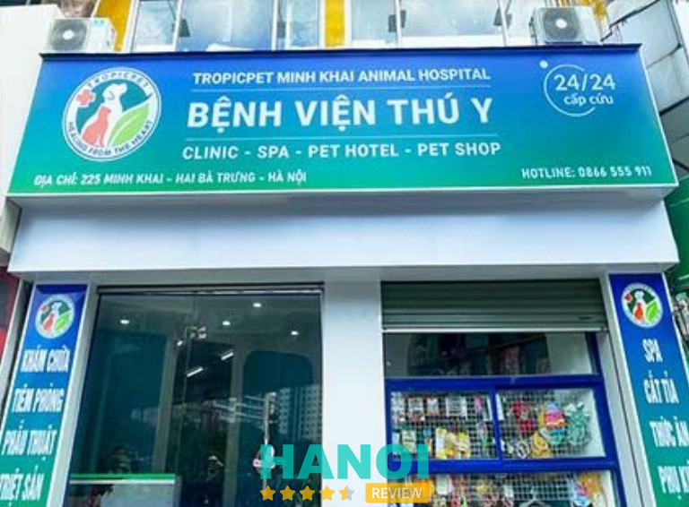
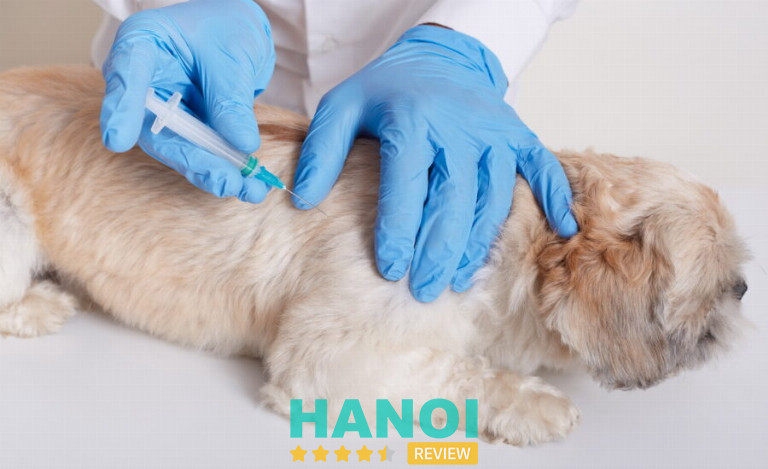
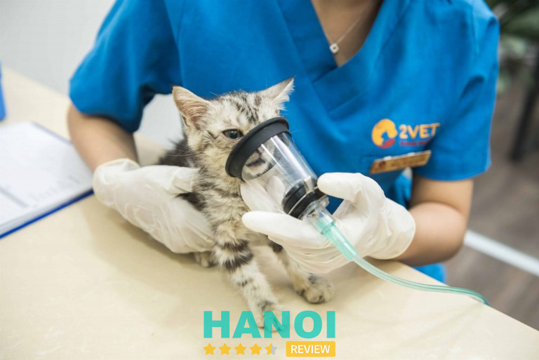
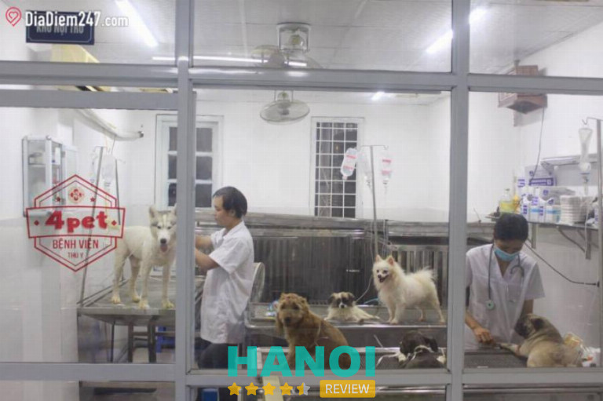
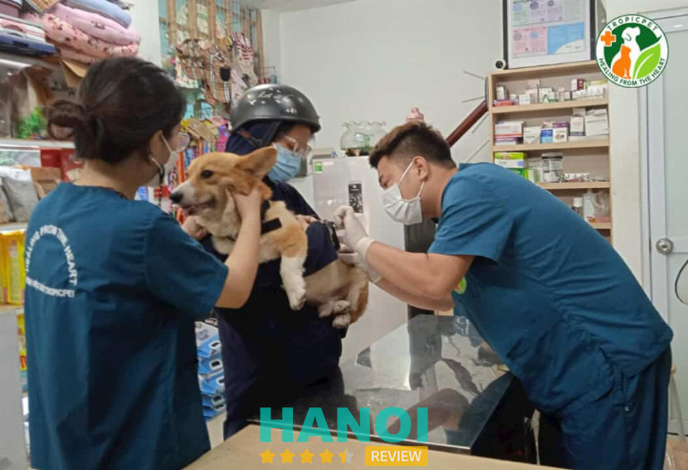
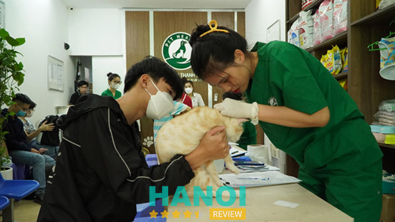
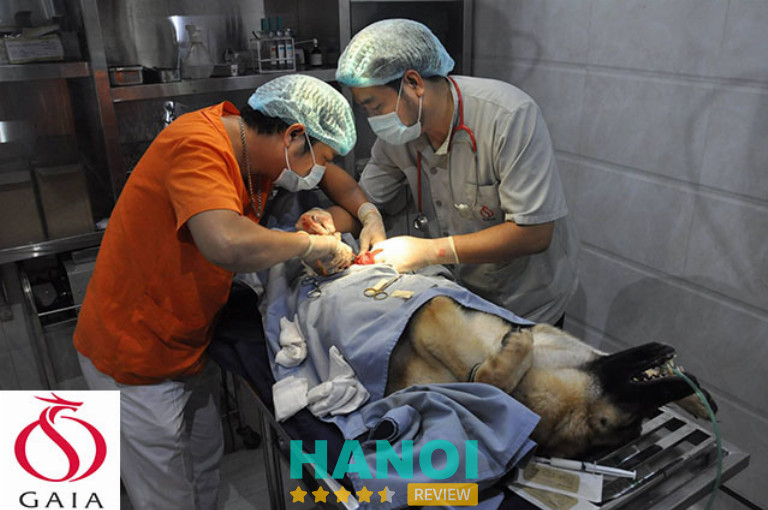
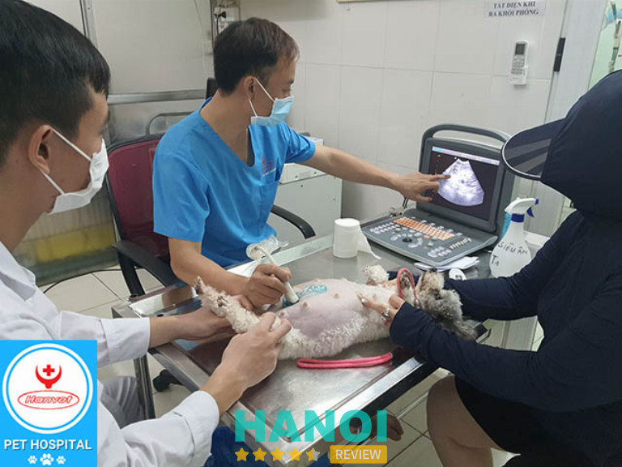
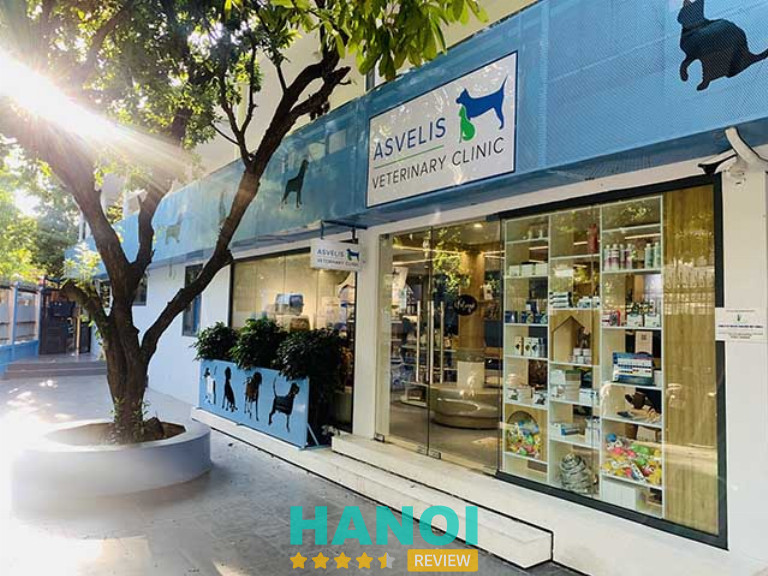

10 Phòng khám thú y tại Hà Nội chất lượng, bác sĩ tận tâm
Nhiều phòng khám thú y uy tín tại Hà Nội không chỉ nhận điều trị những căn bệnh nguy hiểm mà còn sớm phát hiện các dấu hiệu bất thường của thú cưng để đưa ra hướng giải quyết đúng đắn. Đồng thời đây cũng chính là nơi bảo vệ thú cưng khỏi các bệnh truyền nhiễm bằng việc tiêm phòng.
Top 10 Phòng khám thú y ở Hà Nội uy tín nhất
Ngày nay, việc nuôi thú cưng đã trở thành một trào lưu mới của xã hội. Chúng được coi là một thành viên trong gia đình, được chăm sóc cẩn thận và được chăm sóc cẩn thận để đảm bảo sức khỏe. Chính vì thế nên có rất nhiều phòng khám thú y mọc lên nhằm đáp ứng nhu cầu của thị trường.
Để bạn đọc lựa chọn được phòng khám thú ý chất lượng, dịch vụ tốt thì HaNoiReview sẽ gợi ý ngay 10 địa chỉ sau đây.
Hệ thống Thú Y Tropicpet – Q. Hai Bà Trưng
Các dịch vụ thăm khám và chữa trị thú cưng tại hệ thống thú y Tropicpet luôn tạo sự hài lòng tuyệt đối với khách hàng. Bởi lý do đó nên nhiều năm liền luôn đứng đầu trong danh sách phòng khám thú y chất lượng nhất Hà Nội, Tropicpet đã phục vụ hơn 30.000 khách hàng.
Hệ thống luôn mang đến dịch vụ toàn diện, hoàn hảo nhất đến với khách hàng. Tại đây cung cấp đa dạng các dịch vụ chăm sóc, khám chữa bệnh thú cưng nhằm mang lại sự thuận tiện cho khách hàng.

Hệ thống thú y Tropicpet sở hữu cơ sở vật chất hiện đại, không gian rộng rãi, khang trang mang cảm giác thoải mái và ưng ý ngay từ lần đầu. Mọi phòng khám đều được vệ sinh sạch sẽ và vô khuẩn bằng cồn để tránh lây nhiễm chéo. Bên cạnh đó, tại Tropicpet còn hội tụ đội ngũ bác sĩ thú y tay nghề cao, chuyên môn tốt kết hợp với trang thiết bị công nghệ tiên tiến làm quá trình chẩn đoán căn bệnh chính xác hơn. Tại đây luôn coi nhân sự là yếu tố then chốt để xây dựng và phát triển doanh nghiệp nên tất cả các nhân viên được đào tạo bài bản về năng lực chuyên môn và văn hóa ứng xử.
Hệ thống thú y Tropicpet có đa dạng các dịch vụ về thú cưng, mọi quy trình được thực hiện từng bước chuyên nghiệp, tỉ mỉ. Hiện tại, Tropicpet đang cung cấp một số giải pháp chăm sóc thú cưng như:
- Chăm sóc sức khỏe: Cấp cứu 24/24, khám và điều trị bệnh, tiêm phòng vaccine, siêu âm x-quang, phẫu thuật chuyên khoa (mổ đẻ, triệt sản, xương khớp…), lấy cao răng,..
- Dịch vụ spa – grooming: cung cấp dịch vụ tắm cho thú cưng có 7 bước, cắt tỉa, làm đẹp phù hợp với từng loại lông và khuôn mặt của thú cưng
- Khách sạn thú cưng: nếu bạn không có thời gian chăm sóc chúng tại nhà thì bạn có thể tham khảo dịch vụ này. Tại đây sẽ có chế độ chăm sóc hàng ngày và chế độ dinh dưỡng tối ưu cho các bé.
Ngoài ra, tại đây còn có nhiều chương trình ưu đãi cho tất cả các dịch vụ. Vào thứ 4 hàng tuần sẽ giảm 15% tất cả các dịch vụ spa – grooming với quy trình chuẩn quốc tế. Vào thứ 5 hàng tuần áp dụng chính sách giảm giá 20% cho dịch vụ lấy cao răng và siêu âm tổng quát chỉ với 75.000 VNĐ.
Hệ thống TroPicPet có 4 cửa hàng trên địa bàn TP Hà Nội
Thông tin liên hệ:
- Địa chỉ: 271 Minh Khai, P. Vĩnh Tuy, Q. Hai Bà Trưng, Hà Nội
- Điện Thoại: 0866 555 911
- Email: contact@tropicpet.vn
- Website: tropicpet.vn
- Fanpage: Fb.com/tropicpetminhkhai
Nana Vet (Chien Vet Clinic) – Q. Đống Đa
Trải qua 10 năm kinh nghiệm thăm khám và điều trị bệnh cho thú cưng, Chien Vet Clinic nhận được nhiều lượt đánh giá cao về chất lượng dịch vụ. Tại đây ứng dụng các thiết bị công nghệ mới, cập nhật nhiều sản phẩm mới, uy tín để phục vụ cho việc chăm sóc thú cưng một cách tốt nhất.
Điều tự hào tại Chien Vet Clinic là sở hữu các y bác sĩ có kinh nghiệm thâm niên với nghề, được đào tạo bài bản và liên tục cập nhập kiến thức để hoàn thành tốt trong nhiệm vụ chăm sóc, điều trị thú y.

Với mục đích mang lại những sản phẩm chăm sóc toàn diện nhất, Chien Vet Clinic cung cấp nhiều dịch vụ chất lượng cao từ điều trị nội, ngoại trú, phẫu thuật, khám chữa bệnh đến tiêm phòng. Hơn thế nữa, tại đây bán các loại thuốc thú y, thức ăn cao cấp, các phụ kiện, đồ chơi, dầu tắm, mỹ phẩm.. dành cho nhiều độ tuổi thú cưng. Chien Vet Clinic cam kết nguồn sản phẩm được nhập từ đơn vị uy tín, có xuất xứ rõ ràng minh bạch.
Thú cưng sẽ được khám bệnh, chăm sóc sức khỏe theo quy trình chuẩn khoa học và tạo điều kiện tốt nhất nhằm đảm bảo tối ưu sức khỏe của thú cưng. Mọi dụng cụ chuyên dụng sẽ được khử trùng kỹ càng trước khi sử dụng phẫu thuật.
Thông tin liên hệ:
- Địa chỉ: 56 Ngõ 19 Trần Quang Diệu, P. Ô Chợ Dừa, Q. Đống Đa, Hà Nội
- Điện thoại: 0977 311 712
- Email: cskh@nanavet.com
- Website: chienvet.com
- Fanpage: FB.com/chienvetclinic
Hệ thống thú y 2Vet – Q. Hai Bà Trưng
Được thành lập vào năm 2011, cho đến nay 2Vet đã mở rộng 15 chi nhánh với đội ngũ nhân sự gồm hơn 100 cán bộ y bác sĩ giỏi trên khắp mọi miền Tổ quốc.
Xây dựng hệ sinh thái gồm 5 lĩnh vực: bệnh viện thú cưng, phụ kiện và thức ăn thú cưng, làm đẹp và khách sạn thú cưng, bệnh viện online và đào tạo và chuyển giao công nghệ. Đến với 2Vet, thú cưng của bạn sẽ được chăm sóc toàn diện chất lượng cao bởi đội ngũ nhân sự yêu thương thú cưng, có chuyên môn cao và tận tâm với công việc

Phòng khám tại 2Vet luôn đảm bảo hợp vệ sinh, đảm bảo an toàn tuyệt đối cho thú cưng khi đến thăm khám hoặc trông nom. Trang bị nhiều thiết bị hiện đại, máy móc tiên tiến áp dụng vào quá trình chữa bệnh. Ngoài ra, những phòng chăm sóc thú cưng được thiết kế bài bản, có đầy đủ các dụng cụ đồ chơi dành cho chó mèo.
Một số dịch vụ tại 2Vet:
- Khám chữa bệnh: gồm có các khoa học dự phòng, tiêu hóa gan mật, tai-mũi-họng, da liễu, chẩn đoán hình ảnh, sản, khóa mắt, cơ xương khớp, răng hàm mặt.
- Spa – làm đẹp: cung cấp dịch vụ chăm sóc sức khỏe da lông, cắt tỉa tạo hình.
- Khách sạn, lưu trú: hệ thống lưu trú chất lượng đạt chuẩn cho thú cưng mỗi khi gia chủ có dịp đi xa.
- Petshop: cung cấp tất cả sản phẩm phục vụ đời sống thú cưng.
Nếu bạn có bất cứ thắc mắc nào về dịch vụ thì có thể liên hệ trực tiếp qua số điện thoại của cơ sở để nhân viên tư vấn sẽ giải đáp mọi thông tin chi tiết và rõ ràng. Ngoài ra tại đây để nhận được nhiều mã giảm giá hấp dẫn và được ưu tiên nhận quà tặng miễn phí thì bạn có thể đăng ký thẻ thành viên của 2Vet.
Thông tin liên hệ:
- Địa chỉ: 335 Kim Ngưu, P. Vĩnh Tuy, Q. Hai Bà Trưng, Hà Nội
- Điện thoại: 024 3826 3366
- Email: contact.2vet@gmail.com
- Website: 2vet.vn
- Fanpage: FB.com/2vet.vn
GỢI Ý: 10 Cửa hàng bán phụ kiện thú cưng tại Hà Nội chất lượng, giá tốt
Phòng khám thú y 4Pet – Q. Đống Đa
Phòng khám thú y 4Pet là địa chỉ tiếp theo mà HaNoiReview muốn giới thiệu đến bạn đọc. Tại đây nhiều khách hàng đánh giá là dịch vụ tốt, đảm bảo được vệ sinh an toàn thực phẩm cho thú cưng, mức giá hợp lý.
4Pet sở hữu đội ngũ nhân viên là những người có niềm mê với thú cưng, sẵn sàng tư vấn miễn phí cách chăm sóc, những loại thực phẩm nào nên dùng để tăng sức khỏe cho chúng. Đội ngũ y bác sĩ là những người có tâm với nghề, có kiến thức chuyên môn cao, cẩn thận trong từng khâu khám bệnh và đưa ra kiến thức bổ ích cho chủ sở hữu.

Tại 4Pet chuyên chữa trị các bệnh ngoại khoa cắt đuôi, mổ để, bó bột, chụp X-quang, triệt sản, tiêm phòng, tẩy giun, châm cứu, điện giải,…cam kết đúng quy trình, hiệu quả mang lại sức khỏe cho thú cưng của bạn.
4Pet còn tân trang nhiều máy móc thiết bị hiện đại cần thiết mang đến chẩn đoán chính xác cho thú cưng của bạn. Phòng khám sạch sẽ và môi trường an toàn tạo cảm giác thoải mái và khách hàng có thể yên tâm hơn khi sử dụng bất cứ dịch vụ nào tại đây.
Thông tin liên hệ:
- Địa chỉ: 118 Trường Chinh, P. Phương Đình, Q. Đống Đa, Hà Nội
- Điện thoại: 0917 060 111
- Email: Thanhpet85@gmail.com
- Fanpage: FB.com/benhvienthuy4pet
Phòng khám thú y Mỹ Đình – Q. Nam Từ Liêm
Với kinh nghiệm hơn 10 năm hoạt động trong lĩnh vực thú y, phòng khám Mỹ Đình là đơn vị nhận được nhiều sự tin tưởng của chủ sở hữu khi giao thú cưng tại cơ sở để chăm sóc. Chất lượng thú y tại đây được đánh giá là đạt tiêu chuẩn và đặt niềm tin vào đội ngũ bác sĩ với nhiều năm kinh nghiệm cùng các trang thiết bị hiện đại nhất.

Đến với phòng khám Mỹ Đình, bác sĩ sẽ thăm khám tổng quát cho thú cưng miễn phí, trước khi tư vấn và đưa ra những kiến thức, kỹ năng chăm sóc để tránh các loại bệnh. Các trang thiết bị phục vụ khám chữa bệnh được đầu tư đồng bộ. Đầu tư máy X quang kỹ thuật số thế hệ mới nhất và hệ thống máy xét nghiệm đưa ra kết quả chính xác nhất.
Với tầm nhìn trở thành cơ sở phòng khám thú y chất uy tín nhất Việt Nam, tại đây luôn nổ lực xây dựng đa dạng các loại hình dịch vụ như:
- Spa, cắt tỉa, lấy cao răng
- Sản phẩm thức ăn thú cưng nhiều độ tuổi và phụ kiện
- Siêu âm, đỡ đẻ, mổ đẻ
- Ngoại khoa, phẫu thuật
- Tiêm phòng, tẩy giun ve rận
- Dịch vụ trông giữ thú cưng
Ngoài ra, tại phòng khám thú y Mỹ Đình còn có dịch vụ khám và điều trị tại nhà 24/7. Nhân viên của Mỹ Đình sẽ đến tận nhà để chở thú cưng của bạn đến tại cơ sở và ngược lại, nhằm tạo sự thuận lợi cho khách hàng và đặc biệt là những vị khách không có thời gian chăm sóc.
Thông tin liên hệ:
- Địa chỉ: 3 ngõ 25 Nguyễn Cơ Thạch, P. Mỹ Đình, Q. Nam Từ Liêm, Hà Nội
- Điện thoại: 0969 306 909
- Email: info@thuymydinh.vn
- Website: thuymydinh.vn
- Fanpage: FB.com/thuymydinhhanoi
Bệnh viện thú y PetHealth – Q. Tây Hồ
Bệnh viện thú y PetHealth với cơ sở vật chất vượt trội, quy trình được đảm nhiệm bởi đội ngũ chuyên gia, bác sĩ đầu ngành kết hợp với ứng dụng các phương pháp điều trị mới nhất tạo nên chất lượng dịch vụ hoàn hảo.
Đặc biệt, tại PetHealth luôn có sẵn một bộ phận đến nhà và vận chuyển thú cưng đến tại cơ sở để chăm sóc theo nhu cầu của khách hàng bất cứ ngày nào trong tuần.

Được thành lập và đi vào hoạt động vào năm 2004, PetHealth không chỉ chú trọng vào việc tuyển chọn những nhân tài y bác sĩ có kinh nghiệm thâm niên mà còn đầu tư cơ sở vật chất đáp ứng tiêu chuẩn của Bộ Y tế.
Điển hình trong đó là máy chụp X-quang Fujifilm Corporation công nghệ cao của Nhật Bản với tính năng đưa ra kết quả hình ảnh y khoa về tim, phổi, mạch máu, xương sườn và xương cột sống rõ nhất. Máy siêu âm Chison Q7 công nghệ 4D và máy nội soi Provix công nghệ Hàn Quốc.
Bệnh viện thú y PetHealth tổ chức nhiều dịch vụ khám ngoại trú, spa làm đẹp, huấn luyện thú cưng, phẫu thuật…Hệ thống phòng khám khép kín, khoa học. Hơn thế nữa, các thông tin khám chữa của từng thú cưng được quản lý, lưu giữ bằng hệ thống phần mềm quản lý Bệnh viện tiên tiến nhất hiện nay.
Thông tin liên hệ:
- Địa chỉ: 240 Âu Cơ, P. Quảng An, Q. Tây Hồ, Hà Nội
- Điện thoại: 076 222 9882
- Email: mypet.hospital@gmail.com
- Website: pethealth.vn
- Fanpage: FB.com/pethealth.vn
THAM KHẢO: 10 Dịch vụ chăm sóc thú cưng tại Hà Nội được đánh giá tốt, chất lượng nhất
Chăm sóc thú cưng Gaia – Q. Long Biên
Phòng khám và chăm sóc thú cưng Gaia ra đời nhằm mang đến cho chủ sở hữu thú cưng những sản phẩm và dịch vụ chất lượng, tiện lợi nhất. Đội ngũ y bác sĩ là nguồn lực trẻ, có kiến thức chuyên sâu về lĩnh vực thú y đưa ra nhiều phương pháp điều trị triệt để, rút ngắn thời gian nhất dành cho khách hàng.

Các thực phẩm đồ ăn dành cho thú cưng tại Gaia luôn cam kết có nguồn gốc xuất xứ minh bạch, an toàn tuyệt đối. Bất cứ mặt hàng nào khi nhập về bán cho khách hàng cũng được kiểm duyệt kỹ càng, từng bước.
Tại Gaia thiết kế không gian phòng khám thoáng mát, diện tích rộng rãi. Gaia cung cấp các dịch vụ chăm sóc thú cưng, tiêm chủng, phẫu thuật, điều trị nội trú,.. cùng các thiết bị hiện đại, khám chữa khoa học và bác sĩ áp dụng đúng biện pháp điều trị.
Bên cạnh đó, phong cách phục vụ khách hàng của bộ phận chăm sóc khách hàng chu đáo, chuyên nghiệp và sẵn lòng chia sẻ nhiều kiến thức bổ ích các sản phẩm dinh dưỡng cho thú cưng.
Thông tin liên hệ:
- Địa chỉ: Shophouse 5 – 21 Hướng Dương, Vinhomes Riverside, Q. Long Biên, Hà Nội
- Điện thoại: 024 3795 6956
- Email: gaiapetcare.vietnam@gmail.com
- Website: gaia.vn
- Fanpage: FB.com/gaiacademy
Phòng Khám Thú Y An Phú – Q. Cầu Giấy
Phòng Khám Thú Y An Phú là một trung tâm y tế chuyên khoa cho thú cưng. Phương pháp điều trị được áp dụng bằng công nghệ tiến tiến và đội ngũ bác sĩ có kiến thức y tế chuyên sâu để đảm bảo mỗi thú cưng sẽ được chăm sóc tốt nhất. Tại đây không chỉ chữa trị cho chó, mèo mà còn nhận thăm khám nhiều thú cưng khác.

Tất cả các dịch vụ khám, chữa trị tại đây đều được thực hiện bởi các bác sĩ giàu kinh nghiệm, nhiệt huyết và sẵn lòng khám chữa trị cho bất kỳ đối tượng thú cưng nào. Đồng thời, Thú Y An Phú cũng không ngừng cải thiện trang bị thiết bị y tế với hệ thống hiện đạt, đạt tiêu chuẩn.
Hiện tại, Phòng Khám Thú Y An Phú cung cấp những dịch vụ như: dịch vụ tắm – vệ sinh, dịch vụ làm đẹp, trông giữ chó mèo, tẩy giun sán – tiêm phòng vacxin, phẫu thuật ngoại khoa, xét nghiệm, điều trị nội khoa.
Thông tin liên hệ:
- Địa chỉ: 118 Nguyễn Đình Hoàn, P. Nghĩa Đô, Q. Cầu Giấy, Hà Nội
- Điện thoại: 0862 307 586
- Fanpage: FB.com/100083073471570
Bệnh viện thú y Hanvet – Q. Đống Đa
Được thành lập vào năm 2001, bệnh viện thú y Hanvet được lọt vào danh sách những địa chỉ khám chữa thú cưng đáng tin cậy tại Hà Nội. Sau nhiều năm hoạt động, bệnh viện nhận được nhiều sự yêu mến của khách hàng và mở rộng chi nhánh tại các Quận nội thành Hà Nội và Hải Phòng.

Để góp phần phát triển của bệnh viên cho đến ngày hôm nay thì không thể không nhắc đến nguồn nhân lực vững mạnh tại bệnh viện. Từ bộ phận y tá đến bác sĩ đều làm việc với tinh thần chịu trách nhiệm, trình độ chuyên môn cao và tác phong phục vụ khách hàng chuyên nghiệp.
Ngoài ra, để nâng cao chất lượng dịch vụ thì bệnh viện thú y Hanvet còn đầu tư mạnh vào thiết bị tiên tiến như máy X-quang, siêu âm.. để giúp việc chẩn đoán chính xác, điều trị kịp thời và hiệu quả.
Một số dịch vụ tại bệnh viện thú y Hanvet:
- Dịch vụ y tế: khám bệnh, chữa bệnh cho vật nuôi, tiêm phòng, tẩy giun định kỳ, khám thai, siêu âm thai, can thiệp đẻ khó, X-quang, xét nghiệm máu.
- Các dịch vụ phẫu thuật: phẫu thuật mổ lấy thai, triệt sản, xử lý gãy xương.
- Điều trị nội trú: đối với trường hợp nghiêm trọng
- Dịch vụ thẩm mỹ cho chó và mèo: cắt đuôi, làm móng, tỉa lông.
- Những dịch vụ khác: Cung cấp các đồ chơi, thức ăn gia súc, các loại vitamin và nhiều sản phẩm vật nuôi.
Thông tin liên hệ:
- Địa chỉ: 108H10 ngõ 102 Trường Chinh, P. Phương Mai, Q. Đống Đa, Hà Nội
- Điện thoại: 0983 469 063
- Email: bvhanvet@gmail.com
- Website: Hanvetpetclinic.com.vn
- Fanpage: FB.com/HanvetPetHospital
THAM KHẢO: 10 Địa chỉ bán thức ăn chó mèo tại Hà Nội hàng chính hãng, uy tín
Phòng khám thú y Asvelis – Q. Tây Hồ
Một trong những phòng khám thú y tại Quận Tây Hồ được đông đảo bạn trẻ biết đến đó là Asvelis. Khi đến đây thú cưng của bạn sẽ có cơ hội trải nghiệm dịch vụ chăm sóc tốt nhất từ chăm sóc sức khỏe tổng quát, tiêm ngừa vắc xin, điều trị bọ chét và ve dứt điểm, chăm sóc nha khoa,…giữ cho thú cưng của bạn một cuộc sống lâu dài và khỏe mạnh.

Các bác sĩ tại Asvelis có kinh nghiệm trong cả việc chăm sóc phòng ngừa, các vấn đề nghiêm trọng hơn và đưa ra phương pháp điều trị vượt trội tối ưu thời gian, chi phí. Hơn thế nữa phòng khám được đánh giá cao về vệ sinh sạch sẽ và tân trang công nghệ hiện đại.
Với tiêu chí tiết kiệm, an toàn và cung cấp nguồn thông tin tốt nhất khi nuôi dưỡng vật nuôi, Asvelis đã tạo nhiều niềm tin cho khách hàng. Tất cả các dòng thuốc điều trị, vaccine có nguồn gốc rõ ràng và chất lượng. Bên cạnh đó, đối với dịch vụ trông nom thú cưng thì khu khách sạn được thiết kế riêng biệt tránh nguy cơ truyền nhiễm.
Thông tin liên hệ:
- Địa chỉ: 98 Tô Ngọc Vân, P. Quảng An, Q. Tây Hồ, Hà Nội
- Điện thoại: 024 3718 2779
- Email: hanoipets@asvelis.com
- Website: vietnampetservices.com
- Fanpage: FB.com/ASVELISVetHospital
5 Lưu ý khi đưa thú cưng đến khám thú y ở Hà Nội
Ngày nay, chăm sóc sức khỏe thú cưng là vấn đề được rất nhiều chủ sở hữu quan tâm. Chính vì thế việc đưa chó mèo đi khám định kỳ hoặc tiêm phòng các loại bệnh tại các phòng khám thú y là điều cần thiết. Bởi vì điều này sẽ giúp bạn biết được tình trạng sức khỏe của chúng và có phương án điều trị kịp thời. Tuy nhiên khi đưa chúng đến phòng khám thú y – môi trường xa lạ thì bạn cần chú ý 5 điều sau:
- Bác sĩ có chuyên môn và kinh nghiệm: bạn nên tìm đến những cơ sở uy tín. Vì tại đây sở hữu nhiều trang thiết bị máy móc hiện đại kết hợp với các y bác sĩ có tay nghề cao đưa ra chẩn đoán căn bệnh đúng nhất và phương pháp điều trị hiệu quả nhanh chóng.
- Không để thú cưng tiếp xúc với vật nuôi khác: khi đến tại các cơ sở thú y nơi có quá nhiều vi khuẩn và virus tập trung. Đặc biệt với các bệnh truyền nhiễm, sẽ rất dễ truyền bệnh., vì thế nên bạn không nên cho thú cưng nhà mình đùa giỡn, lại gần với những con vật khác.
- Không ôm ghì chặt thú cưng: bạn có thể cho túi di động, hoặc dùng lồng để mang đến phòng khám thay vì ôm chúng trên tay. Bởi vì thú cưng khi đến một môi trường xa lạ sẽ cảm thấy sợ hãi, e dè.
- Mang theo một chiếc chăn nhỏ: đối với nhiều thú cưng, khi đến phòng khám chúng sẽ có xu hướng sợ và căng thẳng. Để giảm đi sự lo âu và tạo cảm giác an toàn thoải mái bạn có thể dùng chăn tạo cảm giác ấm áp cho thú cưng.
- Theo dõi sau khi khám bệnh: sau khi khám xong, hãy theo dõi diễn biến về cảm xúc, tình trạng bên ngoài của thú cưng nhà bạn có biến đổi gì không. Hơn thế nữa bạn cũng nên sử dụng đúng liều lượng thuốc và thực hiện các biện pháp chăm sóc sau khám bệnh theo lời bác sĩ dặn.
Nếu thú cưng nhà bạn đang gặp vấn đề về sức khỏe thì lưu ngay địa chỉ 10 phòng khám thú y tại Hà Nội chất lượng nhất mà HaNoiReview đã tổng hợp thông tin và chắt lọc những cơ sở uy tín nhất. Hy vọng sau khi đọc bài viết bạn sẽ tìm được một địa chỉ ưng ý.
Có thể bạn quan tâm
- 10 Dịch vụ vệ sinh rèm, sofa, thảm tại Hà Nội chuyên nghiệp, giá rẻ
- 10 địa chỉ bán giỏ hoa quả biếu tết tại Hà Nội cao cấp, sang trọng
- 10 Shop hoa tươi tại Hà Nội nổi tiếng, dịch vụ tốt, hoa đẹp
- 10 Địa chỉ may áo dài tại Hà Nội đẹp xuất sắc
DOANH NGHIỆP: Đăng tải thông tin MIỄN PHÍ.
Tin đọc nhiều


10 Shop bán mèo cảnh tại Hà Nội uy tín, nhiều chủng loại
Các cửa hàng bán mèo cảnh uy tín tại Hà Nội sẽ là nơi cung cấp cho bạn những em thú cưng đáng yêu và...

5 Cửa hàng bò sát tại Hà Nội chuẩn xịn, uy tín, giá tốt nhất
Các cửa hàng bò sát tại Hà Nội hiện đang cung cấp rất nhiều em thú cưng "độc lạ" và thú hút đông đảo sự...

Trở thành người đầu tiên bình luận cho bài viết này!